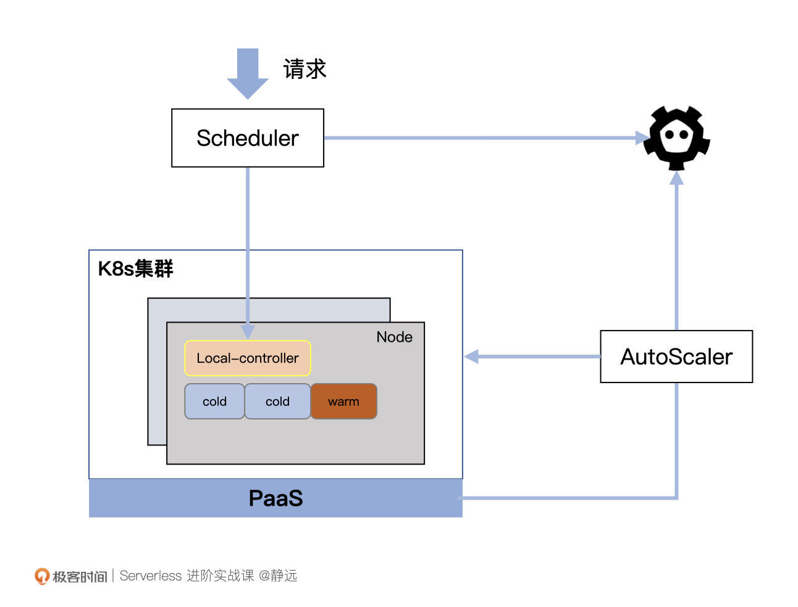
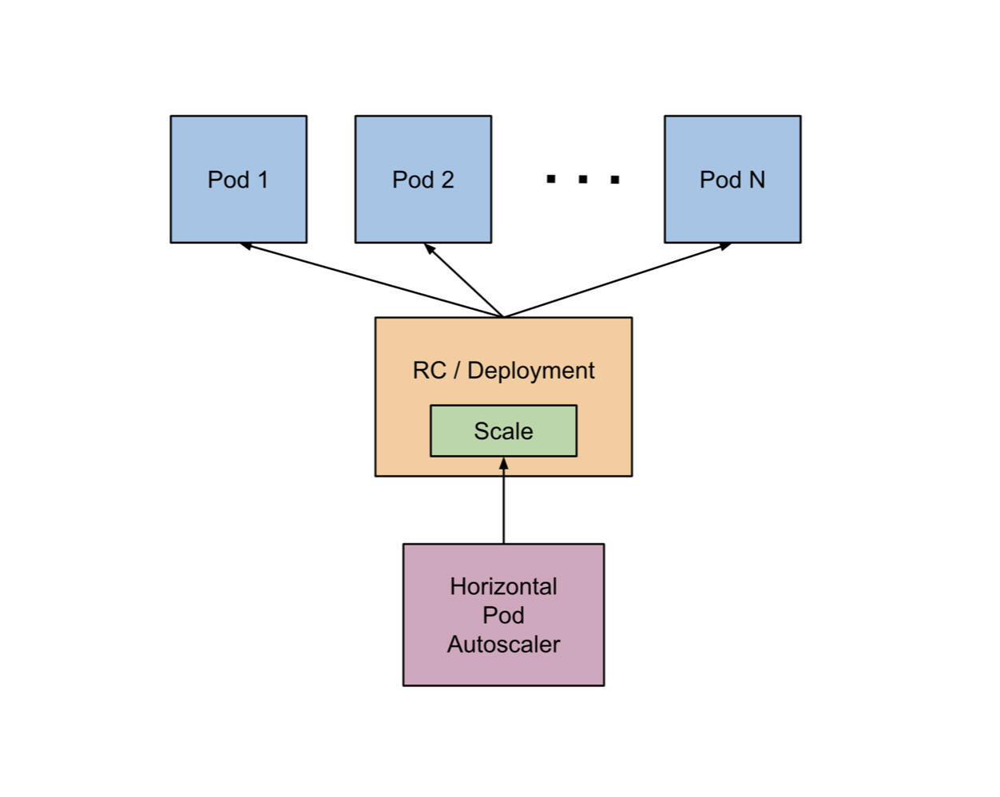
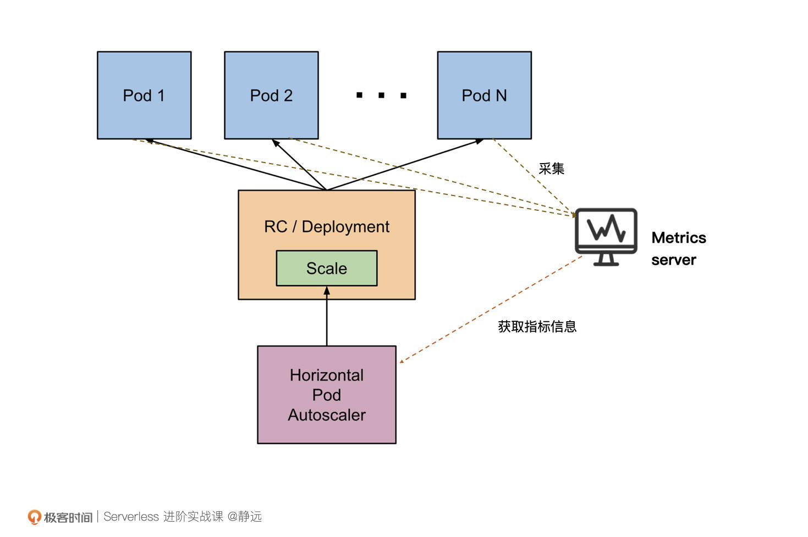
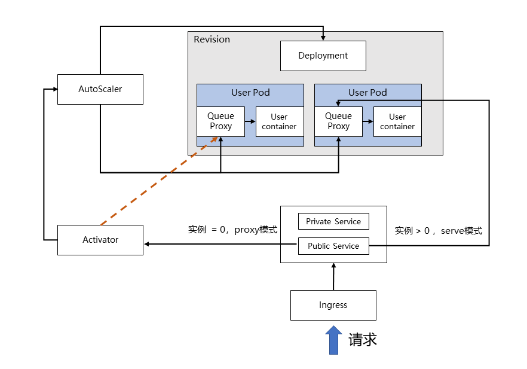
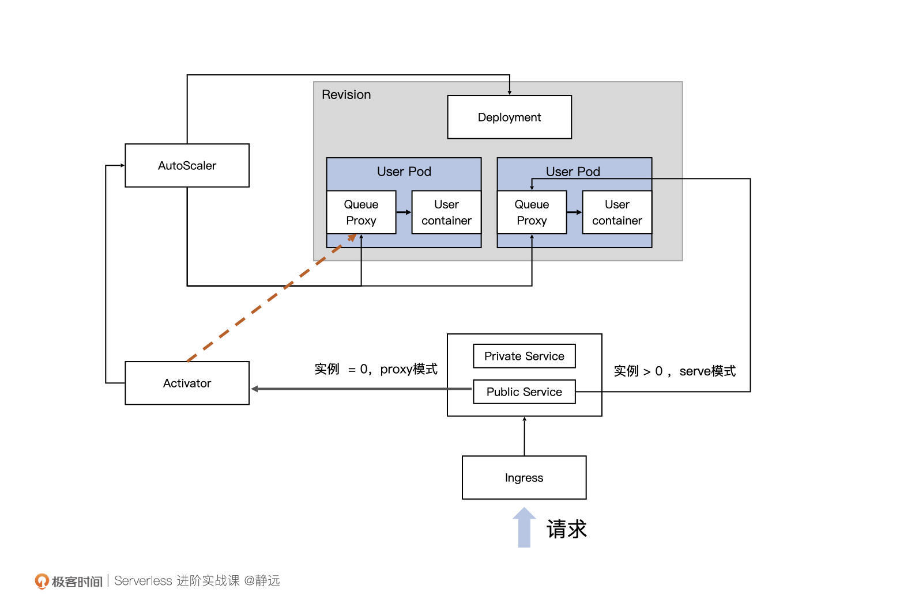
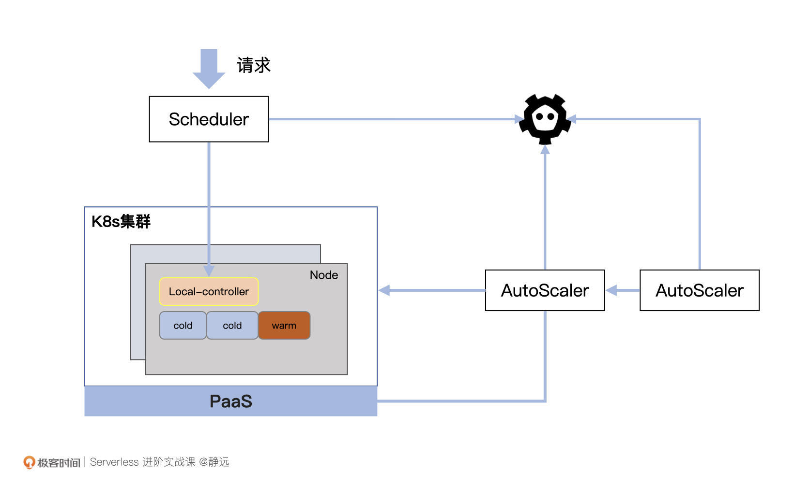

- 00 开篇词 Serverless是降本增效浪潮下的必然选择.md.html
- 00 思维构建 如何在新赛道下进阶Serverless能力？.md.html
- 01 生命周期：函数计算的基本流程是如何执行的？.md.html
- 02 触发器：如何构建事件源与函数计算的纽带？.md.html
- 03 高级属性：应对生产级别的应用，你需要掌握哪些技能？.md.html
- 04 冷启动：如何加快函数的第一次调用过程？.md.html
- 05 扩缩容：如何应对流量的波峰波谷？.md.html
- 06 流量转发：函数在不同情形下是如何执行的？.md.html
- 07 运行时（上）：不同语言形态下的函数在容器中是如何执行的？.md.html
- 08 运行时（下）：不同语言形态下的函数在容器中是如何执行的？.md.html
- 09 小试牛刀（一）：如何利用函数之间的调用解决业务问题？.md.html
- 10 小试牛刀（二）：如何突破VPC网络的速度限制？.md.html
- 11 WebIDE：如何让函数远离繁琐的本地开发模式？.md.html
- 12 编排：如何协调多任务的运行？.md.html
- 13 可观测（上）： 如何构建多维度视角下的Serverless监测体系？.md.html
- 14 可观测（下）： 如何构建多维度视角下的Serverless监测体系？.md.html
- 15 选型：不同阶段的数据应如何存储？.md.html
- 16 动手体验（一）：如何实现业务高效率地开发上线？.md.html
- 17 动手体验（二）：如何在云函数场景下实现一个有状态的服务？.md.html
- 18 实战指南：Serverless沙场老兵的一线使用经验.md.html
- 19 实战进阶（一）：Serverless “连接器” 的能力到底有多大？.md.html
- 20 实战进阶（二）：如何基于智能音箱开发一个BOT技能？.md.html
- 21 实战进阶（三）：传统的服务如何迁移到Serverless平台？.md.html
- 22 私有云：赛马时代的Serverless核心引擎谁能胜出？.md.html
- 23 实战进阶（四）：如何从0到1进阶一个开源引擎？.md.html
- 24 实战进阶（五）：如何从Serverless引擎蜕变成一个Serverless平台？.md.html
- 结束语 在实战中把握事物本质，不断革新.md.html
- 捐赠
05 扩缩容：如何应对流量的波峰波谷？
你好，我是静远。
今天我要和你分享的主题是Serverless函数计算的核心特性：动态扩缩容。
在介绍扩缩容的实现原理之前，我们首先来看这样2个真实的场景。
场景1：汽车日志的准实时流推荐服务，白天车流量比较大的时候，访问量较大，夜晚随着车流量的降低，需要处理的量就比较小了。
场景2：针对线上服务的监控程序，以10秒请求一次重要接口的方式进行轮训服务，确保服务的可用性。
这两个场景的区别，就在于量级是否平稳。试想一下，如果用PaaS、K8s服务的思路实现场景1的功能，就需要按白天最大请求量的规格来申请资源，确保服务能实时处理完。那么，夜间大部分的资源就是空闲的，利用率很低。对于场景2来说，访问量比较平稳，PaaS服务的确是比较合理的应用，资源的使用也相对合理。
Serverless由于具备弹性扩缩容的能力，可以完美地解决场景1的问题，而针对这种比较轻量的场景，函数计算就是不二的选择了。因为它可以将实例缩容为0，并根据请求量级自动扩缩容，从而有效提升资源的利用率。
可以说，极致的动态扩缩容机制是Serverless函数计算的那顶皇冠，戴上它，才能彰显和PaaS平台的不同之处。
那么，这个“不同之处”背后的实现机制是什么样的呢？
今天，我会带你深入了解不同形态下的自动扩缩容架构原理，从K8s的HPA开始分析，再去聊聊目前开源Serverless明星框架Knative的KPA，看看它的实现和HPA有什么不同。最后，我们再提取出自动扩缩容的核心思想，让你能够理解自己要设计一个系统的时候该怎么做。
基本框架
开源的Serverless函数计算引擎核心，基本上是通过K8s的HPA来做，而云厂商一般有封装好的各种底座服务，通常可以基于底座的产品来封装，例如容器服务、容器镜像服务、云服务器等。但我们也不排除云厂商基于开源框架做二次开发的可能性。
云厂商容器调度服务的发展历史中，通常有两种调度形态，一种是基于节点Node调度的方式，一种是基于容器实例的方式（我们通常把这种称为Serverless的，即不感知Node维护的方式），你可以简单地认为，前者是拿了一整套房子过来，自己维护整套房子和隔间的运行，而后者只关心隔间的运行情况。
由于云厂商的函数计算通常是基于容器服务的底座来进行的，接下来，我就从Node和Pod两个形态，分别来跟你讲一讲它们的调度方式。
Node维度
首先，我们来看Node调度形态下，函数计算框架是如何进行动态扩缩容的。

如上图所示，这是一张基于容器PaaS服务和云服务Node的扩缩容调度示意图，我来解释一下它的各个部分都有着什么样的作用。
- Scheduler：调度模块负责将请求打到指定的函数实例上（Pod），同时负责为集群中的Node标记状态，记录在etcd中；
- Local-controller：Node上的本地控制器，负责管理Node上所有函数实例的生命周期，以DeamonSet的形式存在；
- AutoScaler：自动扩缩容模块，会定期检测集群中Node和Pod的使用情况，同时根据自定义策略进行扩缩容。扩容时，往往会向底层的PaaS资源进行申请，例如百度智能云的CCE、阿里云的ACK/ASK等；
- Pod ：也就是上图标识的Cold和Warm两种状态的容器，Cold表示该Pod未被使用，Warm表示正在被使用或者处于等待回收的状态；
- Node：包含闲置、占用两种状态，如果一个Node上所有Pod都是“Cold”，那么该Node为闲置状态，否则为占用。
当系统运转时，AutoScaler会定期检查集群中所有Node，如果检测到Node处于一个需要扩容的状态，则根据策略进行扩容。当然，这个策略完全可以由你自己定义，通常可以按照“占用除以总数的比例是否处于一个合理区间”来进行判定。
在这种形态下， Pod通常会作为函数实例的通用形态。代码以及不同运行时往往也是以挂载的形式注入到容器内。Autoscaler也会在轮询时根据Warm Pod的闲置时间将其重置为Cold Pod，从而让整个集群资源达到一个较高复用能力的水平。
在缩容时，理想情况下AutoScaler可以将Node缩容到0，但通常为了应对突发的流量请求，也会预留一部分Buffer存在。
你会发现，Node的调度方式对于函数计算调度引擎来说更加的灵活。但“权限越大责任越大”，Node维度的方案，除了需要管理Node的调度之外，还需要处理Node中Pod的安全隔离和使用。这种形态下，我们可以通过“空Pod”的方式来提前占用，预加载一部分Pod出来，加快“真实Pod”的创建速度。
Pod维度
可能你也猜到了，以Pod为扩缩容单元的好处就在于它能够更加细粒度地控制函数实例的数量。下面，我们就从扩缩容的“鼻祖”HPA（HorizontalPodAutoscaler）开始，了解Pod维度的扩缩容动作流程。
开始之前，你可以先思考这样一个问题，HPA既然就是用来负责自动扩缩容的，那么它是否可以直接用于Serverless呢？先不要急着回答，我们先看HPA的扩缩容机制。
常规扩缩容
在K8s官网有这样一段关于自身扩缩容控制器HPA的定义。
The HorizontalPodAutoscaler is implemented as a Kubernetes API resource and a controller. The resource determines the behavior of the controller. The horizontal pod autoscaling controller, running within the Kubernetes control plane, periodically adjusts the desired scale of its target (for example, a Deployment) to match observed metrics such as average CPU utilization, average memory utilization, or any other custom metric you specify.
不用非要看懂，这里说的，大体可以理解为这个扩缩容控制器做了两件事：
第一件事，定期从k8s控制面获取资源的各项指标数据（CPU利用率、内存使用率等）；
第二件事，根据这些指标数据将资源数量控制在一个目标范围内。

从K8s的官方文档中，你基本可以看到HPA的雏形：HPA通过控制Deployment或者RC来实现对Pod实际数量的控制。官方给出的HPA架构图可能还不太好理解，我们把指标（metric）数据的收集过程加上再看看：

具体的工作流程是什么样呢？你可以对照着示意图来理解我下面说的流程。
在K8s中，不同的Metric会由对应的Metrics Server持续采集（Heapster 或自定义 Metrics Server），HPA会定期通过Metrics Server的API或者聚合的API Server 获取到这些Metric指标数据（CPU 和 内存使用情况），从而根据你自己定义的扩缩容规则计算出Pod的期望个数，最后，根据Pod当前的实际数量对RC/Deployment做出调整，使Pod达到期望的数量。
讲到这里，你应该能很快地回答出来，HPA形态的扩缩容还不能直接用于Serverless。
因为Serverless语义下的动态扩缩容是可以让服务缩容到0的，但HPA不能。HPA的机制是通过监测Pod的Metrics指标来完成Deployment的扩缩容，如果Deployment的副本数缩容到0，流量没有了，指标为0，那HPA也无能为力了。
极致扩缩容
正因为如此，从0到1的扩缩容过程，是需要额外的机制来加持的。由于目前社区和各大云厂商都非常重视Knative，部分的传统企业在转型过程中也选择Knative作为私有化部署方案的底座首选。所以，我这里同样选择以Knative的KPA来做说明。
Knative的扩缩容主要包括三个方面：流量指标的收集、实例数量的调整、从0到1的过程。

- 流量指标的收集
扩缩容最重要的一步，就是收集我们所需要的指标。我们可以对照着流程图来理解一下。
在Knative中，Revision代表一个不变的、某一时刻的代码和Configuration的快照。每个 Revision会引用一个特定的容器镜像和运行它所需要的任何特定对象（例如环境变量和卷），再通过Deployment控制函数实例的副本数，而我所说的实例，就是图中的User Pod了。
和我们之前介绍的Node维度扩缩容机制中的函数实例不同，这里，你可以看到每个函数实例（User Pod）中都有两个容器：Queue Proxy和User Container。其中，User Container，我相信你一定猜到了，是部署和启动我们自身业务代码的容器，那么Queue Proxy呢？
实际上，在每个函数实例被创建时，都会被以Sidecar的方式将Queue Proxy注入，也就是在原来的业务逻辑上再新加一个抽象层。Queue Proxy作为每一个User Pod的流量入口，负责限流和流量统计的工作。每隔一定时间，AutoScaler都会收集Queue Proxy统计的流量数量，作为后续扩缩容的重要依据。
通俗地来讲，其实就是在自身业务代码的容器旁边，又加了一个双胞胎Queue Proxy，双胞胎加入的方法，就是Sidecar。后续不管在这个房子的（User Pod）兄弟干了什么，都会让这个双胞胎去记录。在最外层的AutoScaler，则会去找这位双胞胎收集所有的信息，为后续的扩缩容做准备。
- 实例数量的调整
当收集到流量的指标后，AutoScaler就需要根据指标调整实例的数量了。Autoscaler会通过改变实例的Deployment来决定实例最终的个数，以便确定扩容出来多少个Pod。
简单的算法，就是按照将当前总的并发数平均划分到期望数量的实例上，使其符合设定的并发值。
这里简单举个例子，比如当前总并发数为100，设定的并发值为10，那么最终调整出的实例数量就是：100/10=10个。当然，扩缩容的实例数量还会考虑到系统的当前的负载和调度周期等因素。
- 从0到1
看到这，可能你会有个疑问：我们能够确定的，是当Revision存在实例时流量接收的情况，那么如果Revision实例缩容到了0，流量又是怎么被接收的呢？是直接丢弃，还是暂存在某个地方呢？
为了解决这一问题，Knative专门引入了一个叫做Activator的组件来做流量暂存和代理负载。

我们还是来看这张图。事实上，当AutoScaler将函数实例缩容为0时，会控制Activator作为实例为0时的流量接收入口，也就是图中红线的部分。Activator在收到流量后，会将请求和信息暂时缓存，并主动告知AutoScaler进行扩容，直至成功扩容出函数实例，Activator才会将暂存的流量转发到新生成的函数实例上。
这里带来一个问题：流量什么时候会切换到Activator或者Knative的Pod上呢？我们会在流量转发一节中仔细讲此类问题。当然，你也可以提前关注ServerlessServices（SKS）和 TBC (target-burst-capacity)等关键组件和参数的相关设置。
扩缩容模型设计思路
到这里，我们已经从Node和Pod 两个不同的维度学习了Serverless比较典型的扩缩容机制方案了。那么，思考一下，如果让你来设计一个扩缩容系统，该怎么去实现呢？
Node和Pod的方案一定给了你不小的启发。下面，我将从指标、决策、数量三个核心点，来给你讲一总体的设计思路。
- 指标
无论是Node纬度还是Pod纬度，我们会发现最终系统都是根据一些监控的指标来作为扩缩容的依据，同时，这些指标的采集任务往往都是通过定时轮询的方式来完成。
比如，Node扩缩容案例中用的是Node 处于空闲或占用的数量，HPA中采用CPU利用率、内存使用率来作为Pod扩缩容的依据，而Knative是通过Collector统计Pod的并发情况来进行扩缩容判断。
所以，指标的选取是扩缩容的首要因素，你需要按照你的平台特性，来确定需要收集哪些指标，并且通过某种手段将它们收集上来为你所用。
- 决策
拿到指标之后，最后都会通过一个专门负责扩缩容的模块（如AutoScaler）来根据这些指标进行决策。决策的过程，就是以这些指标作为输入，最终输出是否扩缩容、扩容多少或者缩容多少。
决策过程完全可以由你自己定，比如按照比例、固定数量，按照操作后的指标平均值等等。
你也可以根据系统调度情况，设置不同的调度方式，比如针对流量突然上涨采取及时扩容，针对流量的平滑升降采取延时扩容等等。像Knative就有两种模式：Stable /稳定模式和Panic /恐慌模式。
- 数量
决策结果出来之后就简单了。你可以根据结果来让资源数量处于一个预期值，这一步完全不需要你操心，不论是Node或者Pod维度，K8s的HPA都会来做好。
为服务引入预测能力
最后，还记得我们最开始说的场景1的日志处理情况吗？日志的流量出现了明显的波浪式浮动，比如晚上23点之后流量减少，上午6点之后流量增加。那么，为了应对流量的波峰到来比较迅猛的情况，我们还可以提前预测预扩，让系统的扩容更平滑。

这里还是以Node级别的扩缩容为例。我们可以在扩缩容模块的基础上，以旁路的方式额外增加一个预测模块。定期统计Node状态和数量的信息，同时根据历史信息对外进行周期预测。当然，历史的信息时间窗口和预测周期都需要经过大量的数据训练以及人工干预因子，才可以在生产环境用得比较顺手。
但我们也要知道，它不是“万金油”，并不是什么情况都能预测准确，只能说在一定阈值范围内起到一定的辅助作用。
同时，这是一个性能和成本博弈的过程，尤其对于云厂商来说，极致的优化成本是我们每个研发人员追求的目标。
小结
最后，我来小结一下我们今天的内容。
这节课，我从常见的两个场景案例入手，介绍了Serverless核心特性扩缩容相对于普通PaaS服务的优势。这个优势不仅体现在资源的利用率上，进一步来说，更反应在成本上。
接着，我从实际市场运用和历史演进的角度出发，介绍了Node和Pod两个维度中市面上常见的扩缩容机制。介绍的重点放在了Kubernetes的HPA以及目前比较火热的明星Serverless引擎Knative的KPA机制上，也从流量指标的收集、实例数据的调整和区别最大的的0到1的过程来讲解了整个扩缩容的原理。
而上述的讲解，都是为了我们能从共性中抽象出一套设计扩缩容系统的思路，这里面，最主要的还是要抓住三个核心要点：指标、决策、数量。
最后，我们如果是要以平台的视角提供服务，还可以做得更智能，通过预测系统让扩容变得更加平滑，性能更优。
思考题
好了，这节课到这里也就结束了，最后我给你留了一个思考题。
想一想，还有没有什么更好的方法能够避免系统频繁扩缩容，从而保证稳定的资源供给呢？
欢迎在留言区写下你的思考和答案，我们一起交流讨论。感谢你的阅读，也欢迎你把这节课分享给更多的朋友一起进步。
© 2019 - 2023 Liangliang Lee. Powered by gin and hexo-theme-book.